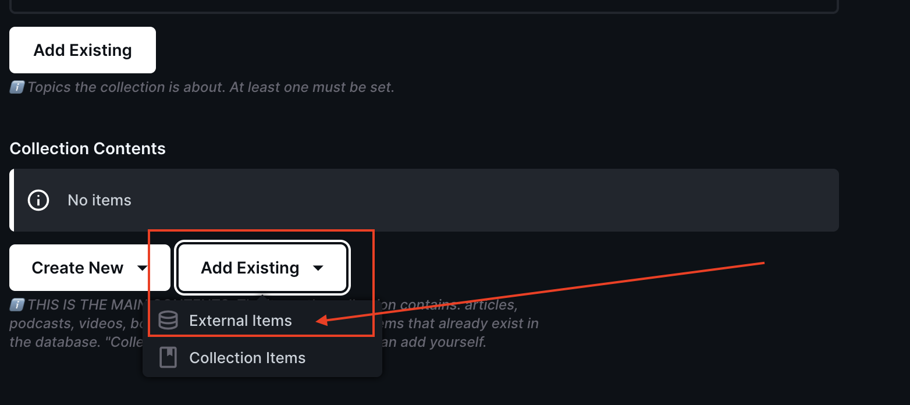
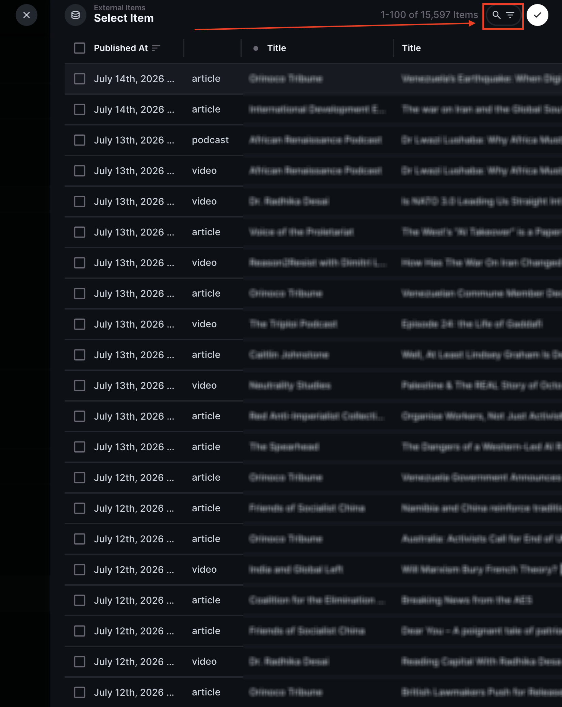
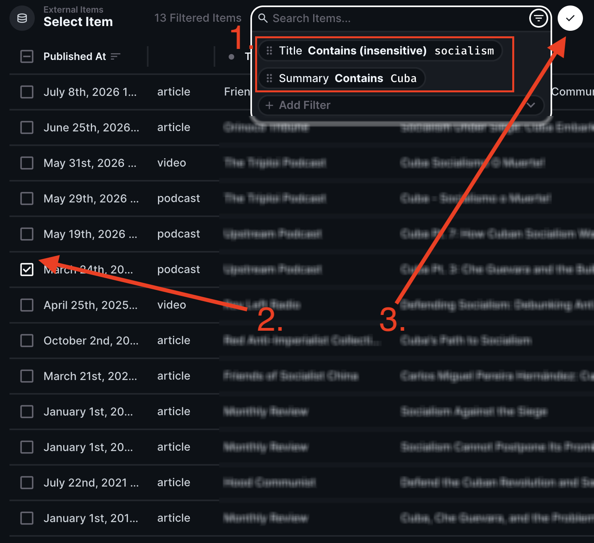
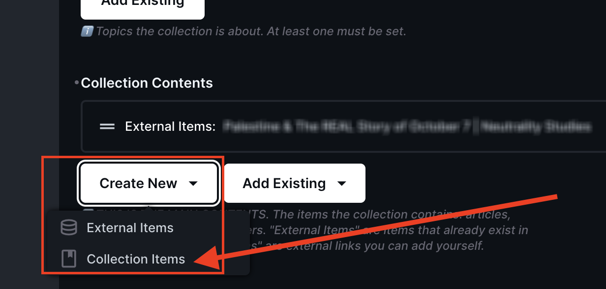
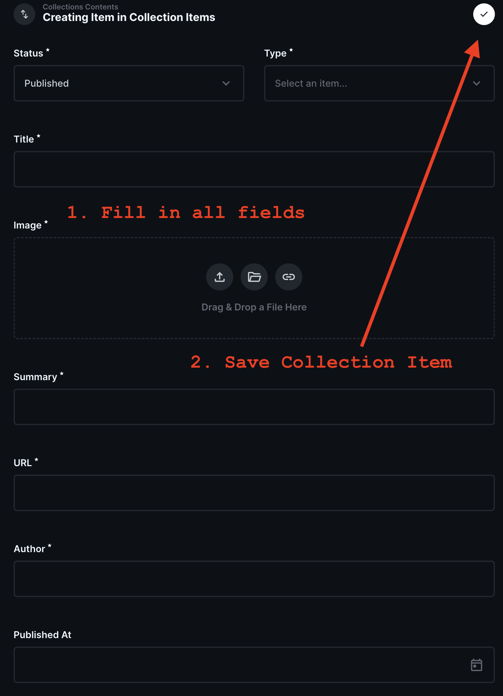
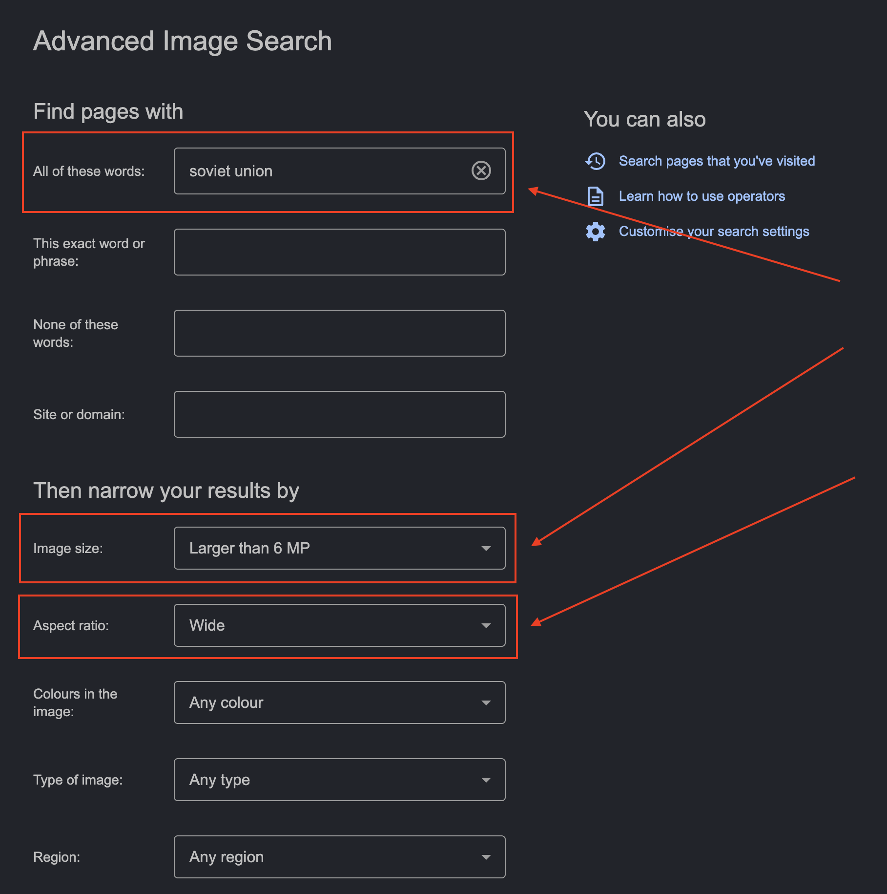

This guide is for Curators — people who help edit Collection content for the website.
💡 You will need the following which will be sent securely to you separately:
- The URL to the admin console.
- Your username and password for Basic Authentication.
- Your Directus email and temporary password.
‼️ Keep your email and password private and secure. Do not share them with anyone.
💡 If you lose your email or password, contact us to reset it.
🔒 The admin console is protected by two layers of security.
- Basic Authentication
- Directus Login
First, you will see a Basic Auth dialog when you open the site.
💡 Tip: If the dialog does not appear or you see "401 Unauthorized", try refreshing the page. If you still cannot access it, contact us.
After passing Basic Auth, you will see the Directus login screen.


💡 All fields are required. You will not be able to save the Collection without filling in all the fields.
| Field | Description |
|---|---|
| Status | 💡Determines if the Collection is live on the websiteThe status of the Collection. Set to "Published" to make the Collection live on the website or "Draft" to keep it hidden. |
| Title | The title of the Collection - appears as the main header text. The URL of the Collection page on the
website will also be derived from the title: for example a Collection called "High-speed Rail
Network" will be
available at "https:// |
| Hero Image | 💡 MINIMUM WIDTH: 2,560px, MINIMUM HEIGHT: 1,920px — Wide banner image for the Collection page |
| Summary | A short summary of what the Collection is about (max 255 characters) - displayed on cards on the homepage |
| Description | A longer rich text description (must be between 750 - 900 characters) that serves as the main explanation of the Collection: what it's about, why it's important, what to expect, etc. |
| Topics | Topics the Collection is about. At least one must be set (e.g., Geopolitics, Economics, Agriculture, Philosophy) |
| Collection Contents | ‼️ The main contents of the Collection — articles, podcasts, videos, books, papers. Can be "External Items" (existing searchable database items) and/or "Collection Items" (external links you add yourself). See "Populating the Collection Contents" section below for more details. |
There are two ways to populate the contents of a Collection:
External Items are items from within the already indexed database that are associated to existing Resources.
At the time of writing there were 8,055 articles, 2,584 podcasts and 5,221 videos
To add an existing external item click:
Add Existing -> External Items

Then you can search through the existing database of 15,000+ saved items:


Collection Items are any items from anywhere on the internet that you may want to manually add to your Collection.
They can be Books, Documentaries, Reports or Other as well as Articles, Podcasts and Videos.
To add a new collection item click:
Create New -> Collection Items

You must fill in all required fields including adding an image and then hit save.

To find a suitable hero image, I recommend using Google Advanced Image Search.
💡 Google is obviously not our friend but for this purpose it is very useful.
It must be a wide image that is at least 2,560px wide and 1,920px high. It must be a high-quality image that is free of copyright restrictions.
Use the following filters to find a suitable image:

Example search results:

‼️ Saving the Collection will automatically trigger a website deploy; expect 3-5 minutes for the new or updated Collection to be live.

Troubleshoot common issues:
Contact us if you run into any issues.